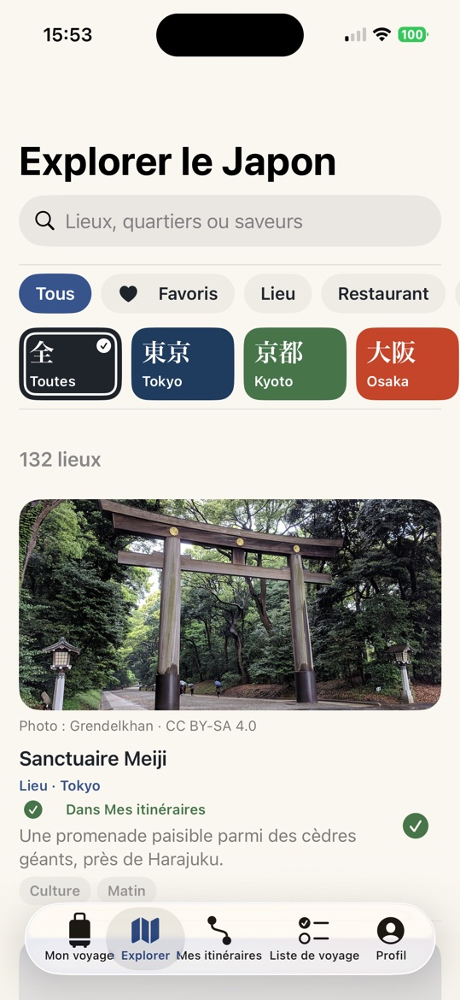
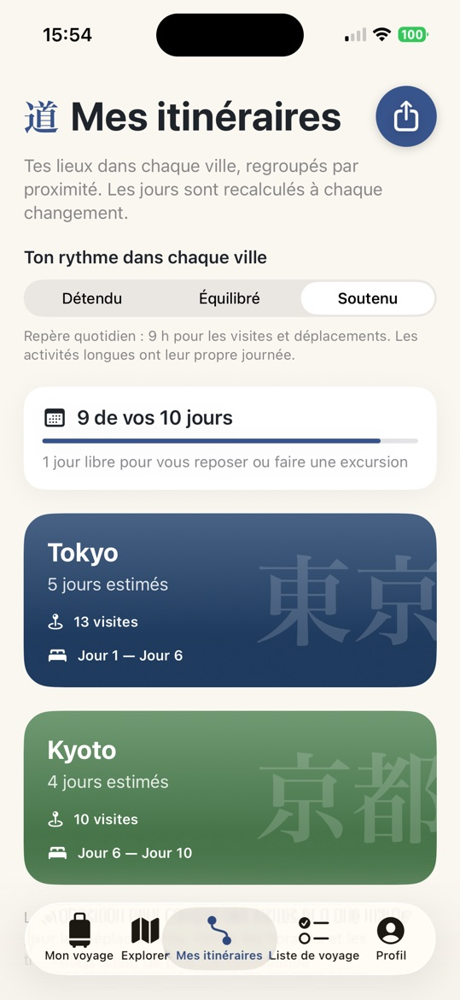
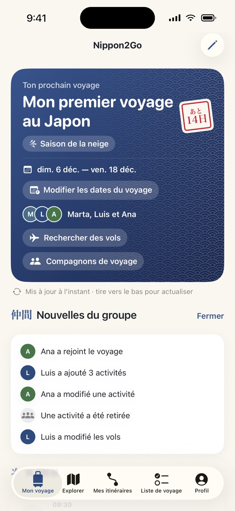
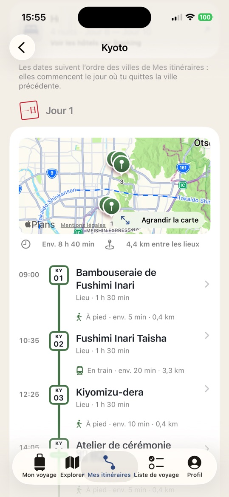
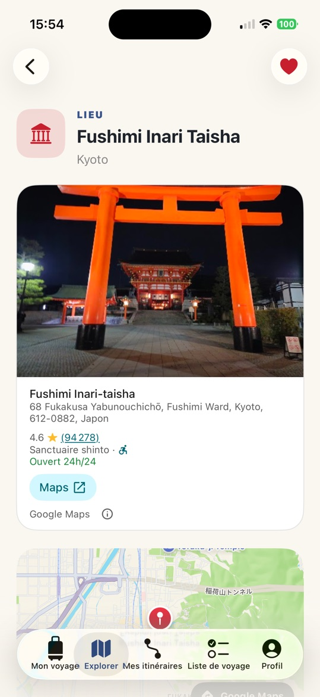
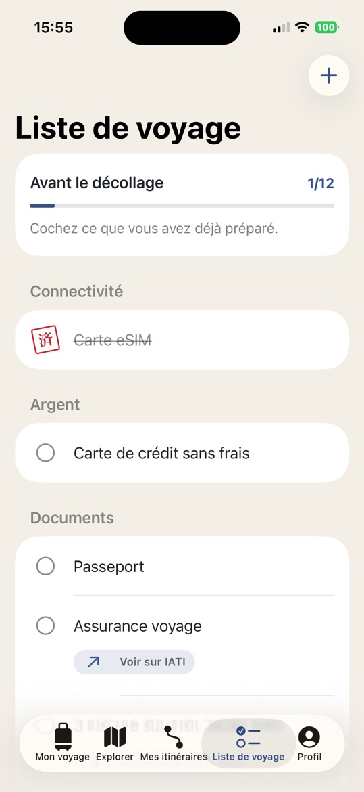
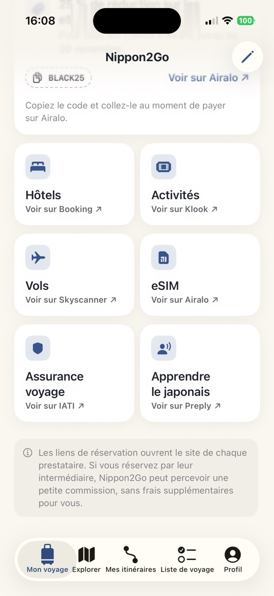
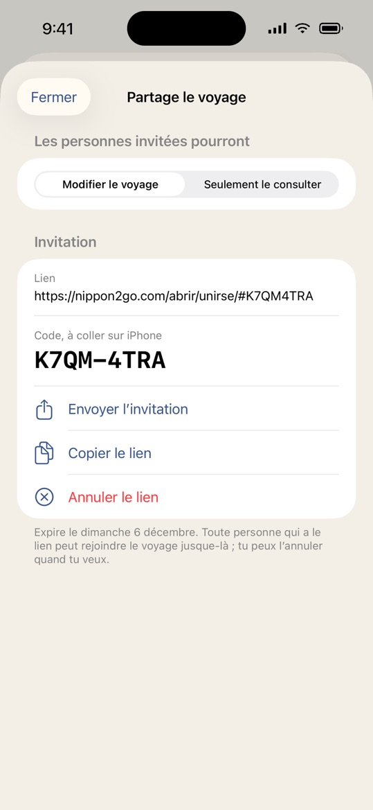

Explorer
Plus de 125 lieux triés sur le volet
Temples, points de vue, quartiers, restaurants, hôtels et expériences à Tokyo, Kyoto, Osaka, Nara, Kamakura, Yokohama et Hiroshima, avec des photos et des filtres par type et par ville.

Découvre les meilleurs endroits, transforme-les en itinéraires réalistes jour par jour et arrive au Japon avec tout ce qu’il te faut, du passeport au JR Pass.
iPhone (iOS 17+) · Android

De ta première idée à ton dernier jour au Japon.
Explorer
Temples, points de vue, quartiers, restaurants, hôtels et expériences à Tokyo, Kyoto, Osaka, Nara, Kamakura, Yokohama et Hiroshima, avec des photos et des filtres par type et par ville.

Mes itinéraires
Ajoute des lieux à ton itinéraire et Nippon2Go regroupe les étapes proches en journées pour chaque ville, avec les horaires, les distances et s’il vaut mieux y aller à pied ou en train.

Lieux
Note Google, horaires d’ouverture et adresse, une carte Apple et le trajet pour s’y rendre avec Google Maps. Les attractions payantes renvoient directement vers leurs billets.

Liste de voyage
Passeport, assurance voyage, eSIM, adaptateur de prise, JR Pass… et tes propres éléments, tamponnés d’un sceau 済 à mesure que tu les coches.

Réservations
Des hôtels sur Booking.com avec ta ville et tes dates déjà renseignées, des activités et des billets sur Klook, une eSIM pour le Japon chez Airalo, des vols sur Skyscanner, une assurance voyage chez IATI et des cours de japonais avec un professeur sur Preply.

Voyages partagés
Invite les personnes qui voyagent avec toi grâce à un lien ou un code : chacun voit et modifie le même voyage sur son téléphone, iPhone ou Android. Tu sais qui a ajouté chaque étape et ce qui a changé, et chacun garde ses favoris, Mes itinéraires et sa Liste de voyage. Un compte n’est nécessaire que pour partager.

Un programme modifiable pour chaque jour, que tu peux ajouter au Calendrier de ton iPhone à l’heure du Japon.
Pas besoin de compte. Tes voyages restent sur ton téléphone. Disponible en 7 langues.
Des réponses rapides aux questions les plus courantes.
Non. Tu peux utiliser toute l’app sans te connecter. Si tu le souhaites, tu peux te connecter avec Apple ou Google dans Profil → Compte. Dans tous les cas, tes voyages ne sont envoyés nulle part.
Uniquement sur ton téléphone. Les voyages ne sont pas synchronisés entre appareils, et supprimer l’app supprime tes voyages.
Ton voyage, tes itinéraires et ta liste de voyage sont enregistrés sur ton téléphone. Les cartes, les photos des lieux, les informations Google sur les lieux et les liens de réservation nécessitent une connexion internet.
Dans Explorer, ouvre un lieu et touche Ajouter à mon itinéraire. Dans Mes itinéraires, Nippon2Go regroupe tes lieux par ville et par distance, puis les répartit en journées selon le rythme que tu choisis dans Ton rythme dans chaque ville (Détendu, Équilibré ou Soutenu). Tu peux ajuster les durées de visite, puis ajouter l’itinéraire à ton programme. Les horaires et les distances sont des estimations : vérifie les heures d’ouverture et les transports avant d’y aller.
Dans Mon voyage, touche Ajouter le programme au calendrier, vérifie les événements et confirme. Nippon2Go demande seulement l’autorisation d’ajouter des événements. L’app ne peut pas lire ton calendrier.
Nippon2Go ouvre Booking.com avec ta ville et tes dates déjà renseignées, et renvoie vers Klook pour les activités et les billets, Airalo pour ton eSIM au Japon, Skyscanner pour les vols, IATI pour l’assurance voyage et Preply pour les cours de japonais. Les réservations se font directement auprès de ces prestataires, et ce sont leurs conditions et leurs politiques de confidentialité qui s’appliquent.
Va dans Profil → Langue de l’application. Tu peux choisir English, Español, Français, Deutsch, Italiano, 한국어 ou 繁體中文, et le changement s’applique immédiatement.
Pour te déconnecter, va dans Profil → Compte → Se déconnecter. Ta session se ferme et tes voyages sont conservés. Pour supprimer ton compte, va dans Profil → Compte → Supprimer le compte : l’app retire son accès à ton compte Apple ou Google et efface tout ce qu’elle conservait pour ce compte sur ton téléphone. Tes voyages restent sur ton téléphone jusqu’à ce que tu supprimes l’app.
Nippon2Go accompagne les voyageurs du choix des lieux à visiter au Japon jusqu’à leur réservation. Les liens vers les prestataires apparaissent exactement là où le voyageur en a besoin, et les hôtels sur Booking.com, les vols sur Skyscanner, l’eSIM pour le Japon sur Airalo et les activités sur Klook passent déjà par leurs programmes d’affiliation.
Chaque ville de Mes itinéraires ouvre Booking.com avec les dates d’arrivée et de départ dans cette ville et le nombre de voyageurs déjà renseignés, tirés du voyage ou estimés à partir de l’itinéraire, dans la langue de l’app. Mon voyage et Profil ouvrent les hôtels de la ville principale du voyage pour ses dates, et chaque hôtel d’Explorer ouvre les hôtels de sa ville.
Les lieux payants ouvrent leur propre page de billets sur Klook, les autres activités renvoient vers les activités Klook de leur ville, et Mon voyage renvoie aussi vers les activités Klook.
La section Réservations et la liste de voyage à cocher avant le départ renvoient vers les vols (Skyscanner), une eSIM pour le Japon (Airalo), l’assurance voyage (IATI) et les cours de japonais (Preply). La liste de voyage renvoie aussi vers le JR Pass (Klook) et vers Visit Japan Web, le site officiel du Japon pour les formalités d’entrée.
Sur iPhone et Android, en anglais, espagnol, français, allemand, italien, coréen et chinois traditionnel.
Envie de collaborer avec Nippon2Go ? Écris à carlos@nippon2go.com.
Une question, un problème ou une idée de nouveau lieu ? Écris-nous à carlos@nippon2go.com.